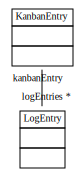

Scenario ScenarioInfrastructure
This scenario tests the scenario infrastructure.
At first creating the html file just with text should work.
Next we need to create some class model. This will be done in a parallel activity.
With the class model we create an object model and try to dump it here.
Well, dumping the class model would be great, either.
need to restructure design: logentries shall be direct kids of kanbanentries. (has been below phase entries before.) phase entries will be used for planning, in future
Editing the log entries is still too tedious. Add parameters to scenario.add and derive log entry from it.